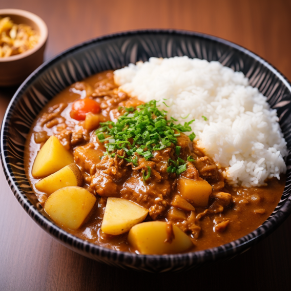

- No.1 Karē, Japan
- Also known as Japanese curry, is a popular dish in Japan. It features a thick and flavorful curry sauce made with various spices, vegetables, and sometimes meat (commonly beef, pork, or chicken). It is often served over rice and can be found in many Japanese households and restaurants
 No.2 Picanha,
Brazil
No.2 Picanha,
Brazil


 No.8 Ghormeh sabzi,
Iran
No.8 Ghormeh sabzi,
Iran